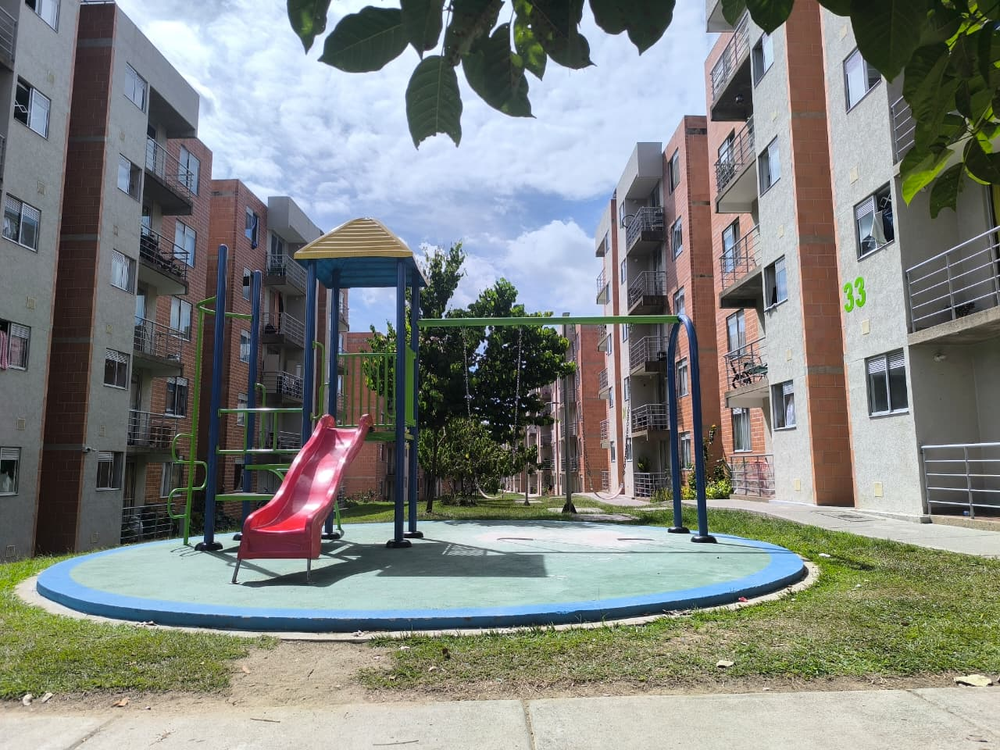
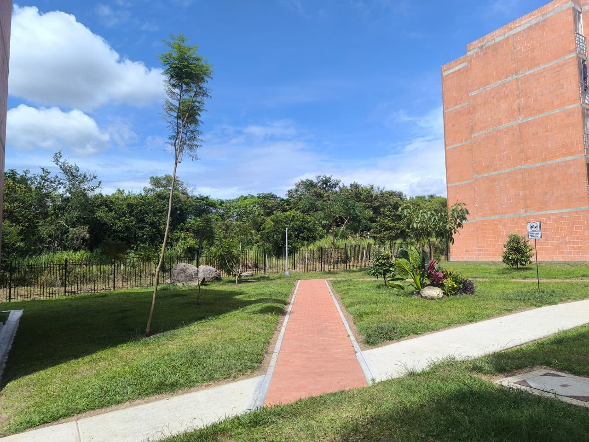

Plataforma institucional orientada a la recuperación administrativa, financiera y operativa de la copropiedad, así como al desarrollo de proyectos estratégicos que permitan fortalecer la sostenibilidad, organización y valorización de nuestros inmuebles.
El actual proceso institucional de CIMARA PH ha requerido asumir retos administrativos, financieros y operativos de gran complejidad, enfrentando situaciones acumuladas durante años y estabilizando progresivamente el funcionamiento cotidiano de la copropiedad bajo criterios de transparencia, responsabilidad y protección patrimonial comunitaria.
Transparencia institucional sobre la situación recibida, los retos asumidos y el esfuerzo adelantado por el actual equipo de trabajo para estabilizar y proyectar el futuro de la copropiedad.
La actual administración transitoria y el Consejo de Administración activo recibieron una copropiedad inmersa en una situación administrativa, financiera y documental particularmente compleja, caracterizada por desorganización institucional, dificultades operativas acumuladas y múltiples problemáticas que afectaban directamente la estabilidad cotidiana del conjunto.
Dentro del contexto recibido también se conocieron diversas observaciones, denuncias y advertencias realizadas por la Revisoría Fiscal, relacionadas con presuntas inconsistencias administrativas, documentales y financieras que venían generando preocupación institucional. En este sentido, se reconoce igualmente la gestión adelantada por la Revisora Fiscal dentro del ejercicio de sus funciones de vigilancia y control.
Posteriormente, y en medio de un ambiente institucional de alta tensión, se presentaron descargos administrativos y finalmente la renuncia del anterior administrador, seguida posteriormente por la desvinculación de la abogada asesora, la contadora y posteriormente la secretaria, situación que dejó a la copropiedad prácticamente en una parálisis administrativa y operativa.
Procesos documentales y administrativos sin continuidad suficiente
Dificultades financieras y operativas que afectaban la estabilidad institucional
Renuncias consecutivas de cargos fundamentales para la operación
Alta presión institucional y afectación en servicios y convivencia
Frente a esta situación, fueron las integrantes activas del Consejo de Administración quienes decidieron asumir voluntariamente el liderazgo del proceso de estabilización, evitando un escenario de mayor afectación institucional y financiera para toda la comunidad.
Bajo el liderazgo de la actual presidenta del Consejo, hoy designada Representante Legal Transitoria, se inició un trabajo intensivo y sistemático para recuperar el funcionamiento administrativo, financiero y operativo del conjunto, aun enfrentando diariamente nuevas problemáticas heredadas.

El actual equipo de trabajo ha debido responder simultáneamente a múltiples situaciones administrativas, operativas y comunitarias mientras se estabiliza la estructura institucional de la copropiedad.
Gestión de desbloqueos, control de movimientos financieros y recuperación del manejo institucional de cuentas bancarias.
Atención permanente de mudanzas, ingresos, salidas y coordinación operativa diaria.
Resolución de conflictos, control comunitario y organización de espacios comunes.
Coordinación de controles, sellos y funcionamiento operativo de espacios comunitarios.
Gestión directa con proveedores externos, contratistas y obligaciones institucionales.
Atención constante a propietarios y residentes frente a problemáticas administrativas y operativas.
Más allá de la recuperación institucional, el objetivo actual también es construir una copropiedad moderna, sostenible, organizada y con mayor valorización futura para beneficio de toda la comunidad.
Estrategias orientadas a sostenibilidad energética y reducción progresiva de costos comunes.
Cámaras inteligentes, control de accesos y fortalecimiento operativo de seguridad.
Automatización administrativa, transparencia documental y modernización tecnológica.
Programas ambientales, reciclaje y fortalecimiento sostenible.
Eficiencia energética y modernización progresiva de luminarias.
Sostenibilidad presupuestal y protección patrimonial comunitaria.
El actual equipo institucional continúa trabajando bajo criterios de legalidad, transparencia, organización y responsabilidad comunitaria, buscando no solamente estabilizar la operación cotidiana de CIMARA PH, sino también construir progresivamente una copropiedad más sólida, moderna, organizada, sostenible y con mayor valorización para todos sus propietarios.
Los procesos de reorganización administrativa, recuperación documental, fortalecimiento financiero y proyectos estratégicos continúan desarrollándose progresivamente conforme a disponibilidad operativa, sostenibilidad financiera, viabilidad técnica y aprobación comunitaria dentro del marco normativo aplicable a la propiedad horizontal.